# same as:
# library(pacman)
# p_load(tidyverse, sf ,..)
pacman::p_load(tidyverse, sf, tmap, spdep)Global and Local Measures of Spatial Autocorrelation
1. Overview
This document covers the in-class exercise 1. In this exercise, we will learn how to compute spatial weights using R.
2. Getting Started
The code check below will install and load the relevant packages. pacman is a wrapper in R that helps us load and install packages.
Functions of tidyverse can be used to perform data science tasks such as importing, wrangling, and visualizing data.
Function of readr package (part of tidyverse) can be used to import csv files.
st_read(dsn = “file path”, layer = “file name”) of sf package can be used to import geospatial data.
Join function i.e., left_join(dataframe1, dataframe2) of dplyr can be used to perform relational join.
poly2nb() of spdep can be used to compute spatial weights and to calculate spatially lagged variables.
3. Importing Geospatial Data
3.1. Importing polygon features
This code chunk uses st_read() function of sf package to import Hunan county boundary layer ESRI shapefile into R as a polygon feature data frame.
st_read() uses two arguments:
dsnto define the data pathlayerto provide the shapefile name
hunan_sf = st_read(dsn = "data/geospatial",
layer = "Hunan")Reading layer `Hunan' from data source
`/Users/ridz/ridhicar/ISSS624/Hands-On_Ex/Hands-on_Ex2/data/geospatial'
using driver `ESRI Shapefile'
Simple feature collection with 88 features and 7 fields
Geometry type: POLYGON
Dimension: XY
Bounding box: xmin: 108.7831 ymin: 24.6342 xmax: 114.2544 ymax: 30.12812
Geodetic CRS: WGS 84The message above reveals that the geospatial objects are multipolygon features. There are a total of 88 multipolygon features and 7 fields in hunan simple feature data frame. hunan is in WGS 84 projected coordinates systems. The bounding box provides the x extend and y extend of the data.
4. Checking the Content of A Simple Feature Data Frame
4.1. Working with st_geometry()
The column in the sf data.frame that contains the geometries is a list, of class sfc. We can retrieve the geometry list-column in this case by hunan$geom or hunan[[1]], but the more general way uses st_geometry() as shown in the code chunk below.
st_geometry(hunan_sf)Geometry set for 88 features
Geometry type: POLYGON
Dimension: XY
Bounding box: xmin: 108.7831 ymin: 24.6342 xmax: 114.2544 ymax: 30.12812
Geodetic CRS: WGS 84
First 5 geometries:POLYGON ((112.0625 29.75523, 112.069 29.74544, ...POLYGON ((112.2288 29.11684, 112.2339 29.11214,...POLYGON ((111.8927 29.6013, 111.8906 29.59811, ...POLYGON ((111.3731 29.94649, 111.3737 29.94167,...POLYGON ((111.6324 29.76288, 111.6312 29.75165,...4.2. Working with glimpse()
glimpse() report of dplyr reveals the data type of each fields. For example, Shape Area Shape Length fields are double-precision values, ID_3 field is in integer data type.
glimpse(hunan_sf)Rows: 88
Columns: 8
$ NAME_2 <chr> "Changde", "Changde", "Changde", "Changde", "Changde", "Cha…
$ ID_3 <int> 21098, 21100, 21101, 21102, 21103, 21104, 21109, 21110, 211…
$ NAME_3 <chr> "Anxiang", "Hanshou", "Jinshi", "Li", "Linli", "Shimen", "L…
$ ENGTYPE_3 <chr> "County", "County", "County City", "County", "County", "Cou…
$ Shape_Leng <dbl> 1.869074, 2.360691, 1.425620, 3.474325, 2.289506, 4.171918,…
$ Shape_Area <dbl> 0.10056190, 0.19978745, 0.05302413, 0.18908121, 0.11450357,…
$ County <chr> "Anxiang", "Hanshou", "Jinshi", "Li", "Linli", "Shimen", "L…
$ geometry <POLYGON [°]> POLYGON ((112.0625 29.75523..., POLYGON ((112.2288 …4.3. Working with head()
# To fetch the first 5 rows of hunan dataset.
head(hunan_sf, n=5)Simple feature collection with 5 features and 7 fields
Geometry type: POLYGON
Dimension: XY
Bounding box: xmin: 111.2145 ymin: 28.61762 xmax: 112.3013 ymax: 29.95847
Geodetic CRS: WGS 84
NAME_2 ID_3 NAME_3 ENGTYPE_3 Shape_Leng Shape_Area County
1 Changde 21098 Anxiang County 1.869074 0.10056190 Anxiang
2 Changde 21100 Hanshou County 2.360691 0.19978745 Hanshou
3 Changde 21101 Jinshi County City 1.425620 0.05302413 Jinshi
4 Changde 21102 Li County 3.474325 0.18908121 Li
5 Changde 21103 Linli County 2.289506 0.11450357 Linli
geometry
1 POLYGON ((112.0625 29.75523...
2 POLYGON ((112.2288 29.11684...
3 POLYGON ((111.8927 29.6013,...
4 POLYGON ((111.3731 29.94649...
5 POLYGON ((111.6324 29.76288...The below code chunk uses st_crs() of sf package pulls the coordinate system of hunan_sf.
st_crs(hunan_sf)Coordinate Reference System:
User input: WGS 84
wkt:
GEOGCRS["WGS 84",
DATUM["World Geodetic System 1984",
ELLIPSOID["WGS 84",6378137,298.257223563,
LENGTHUNIT["metre",1]]],
PRIMEM["Greenwich",0,
ANGLEUNIT["degree",0.0174532925199433]],
CS[ellipsoidal,2],
AXIS["latitude",north,
ORDER[1],
ANGLEUNIT["degree",0.0174532925199433]],
AXIS["longitude",east,
ORDER[2],
ANGLEUNIT["degree",0.0174532925199433]],
ID["EPSG",4326]]hunan_sf data frame is projected in WGS 84, when we read until the end of the print, it indicates that the EPSG is 4326. This is the correct EPSG code for WGS 84, it should be 4326. Hence, there is no need for correction, use of st_set_crs() of sf package.
5. Plotting Geospatial Data
The code chunk below pulls multi-plot of all attributes.
plot(hunan_sf)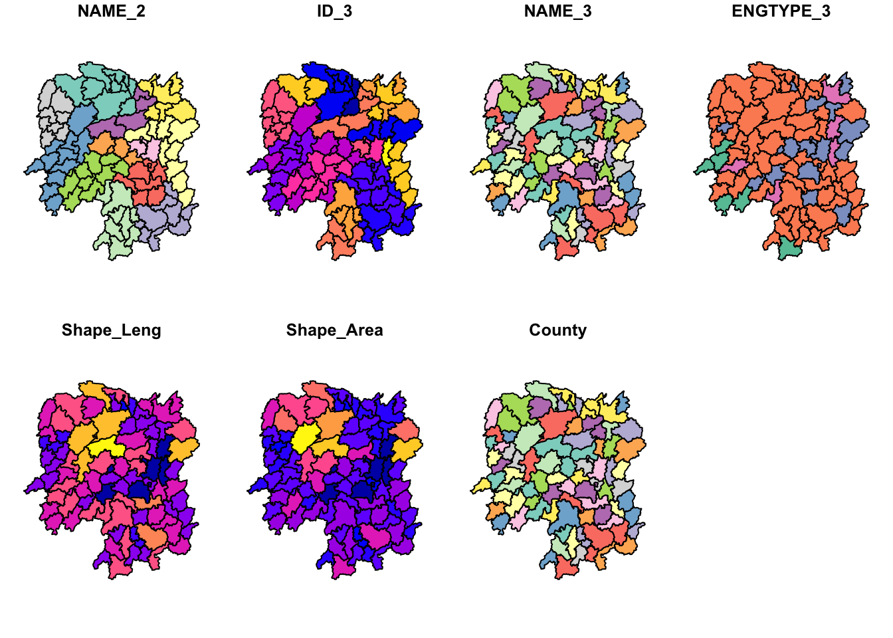
The code chunk below plots only the geometry.
plot(st_geometry(hunan_sf))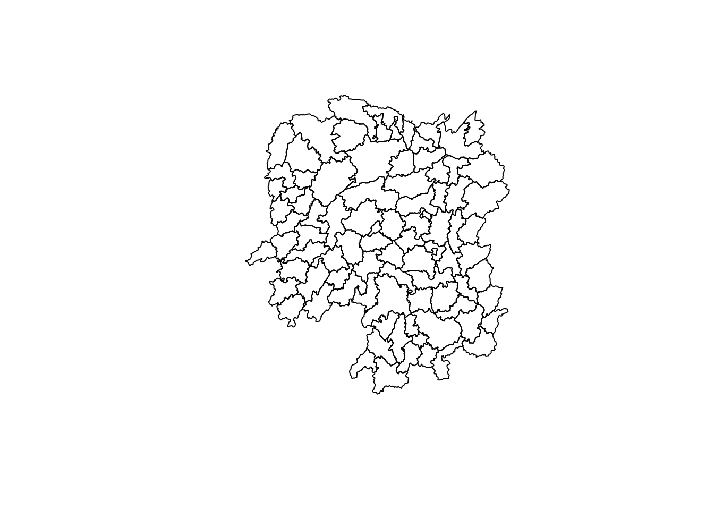
6. Importing Attribute (Aspatial) Data in csv into R
This code chunks below will import Dictionary.xlsx (optional) and Hunan_2012.csv into R. We will use read_csv()of readr package to import Hunan_2012.csv. The output is R dataframe class called hunan2012.
dict <- readxl::read_excel("/Users/ridz/ridhicar/ISSS624/In-class_Ex/In-class_Ex1/data/aspatial/Dictionary.xlsx")hunan2012 <- read_csv("/Users/ridz/ridhicar/ISSS624/In-class_Ex/In-class_Ex1/data/aspatial/Hunan_2012.csv")Rows: 88 Columns: 29
── Column specification ────────────────────────────────────────────────────────
Delimiter: ","
chr (2): County, City
dbl (27): avg_wage, deposite, FAI, Gov_Rev, Gov_Exp, GDP, GDPPC, GIO, Loan, ...
ℹ Use `spec()` to retrieve the full column specification for this data.
ℹ Specify the column types or set `show_col_types = FALSE` to quiet this message.6.1 Working with list()
The code chunk below shows list() of Base R instead of glimpse(), used to examine if the data file, hunan2012 has been imported correctly.
list(hunan2012)[[1]]
# A tibble: 88 × 29
County City avg_w…¹ depos…² FAI Gov_Rev Gov_Exp GDP GDPPC GIO
<chr> <chr> <dbl> <dbl> <dbl> <dbl> <dbl> <dbl> <dbl> <dbl>
1 Anhua Yiyang 30544 10967 6832. 457. 2703 13225 14567 9277.
2 Anren Chenzhou 28058 4599. 6386. 221. 1455. 4941. 12761 4189.
3 Anxiang Changde 31935 5517. 3541 244. 1780. 12482 23667 5109.
4 Baojing Hunan W… 30843 2250 1005. 193. 1379. 4088. 14563 3624.
5 Chaling Zhuzhou 31251 8241. 6508. 620. 1947 11585 20078 9158.
6 Changning Hengyang 28518 10860 7920 770. 2632. 19886 24418 37392
7 Changsha Changsha 54540 24332 33624 5350 7886. 88009 88656 51361
8 Chengbu Shaoyang 28597 2581. 1922. 161. 1192. 2570. 10132 1681.
9 Chenxi Huaihua 33580 4990 5818. 460. 1724. 7755. 17026 6644.
10 Cili Zhangji… 33099 8117. 4498. 500. 2306. 11378 18714 5843.
# … with 78 more rows, 19 more variables: Loan <dbl>, NIPCR <dbl>, Bed <dbl>,
# Emp <dbl>, EmpR <dbl>, EmpRT <dbl>, Pri_Stu <dbl>, Sec_Stu <dbl>,
# Household <dbl>, Household_R <dbl>, NOIP <dbl>, Pop_R <dbl>, RSCG <dbl>,
# Pop_T <dbl>, Agri <dbl>, Service <dbl>, Disp_Inc <dbl>, RORP <dbl>,
# ROREmp <dbl>, and abbreviated variable names ¹avg_wage, ²depositeThe output reveals that hunan2012 tibble data frame consists of 88 rows and 29 columns.
7. Performing relational join
The code chunk below uses left_join(dataframe1, dataframe2) of dplyr package to create a new table hunan, joining the attribute table of hunan’s SpatialPolygonsDataFrame with the attribute fields of hunan2012 dataframe.
hunan <- left_join(hunan_sf, hunan2012)Joining, by = "County"8. Visualising Regional Development Indicator
The code chunk below draws a chloropeth map showing the distribution of GDPPC 2012 by using qtm() of tmap package.
equal <- tm_shape(hunan) +
tm_fill("GDPPC",
n = 5,
style = "equal") +
tm_borders(alpha = 0.5) +
tm_layout(main.title = "Equal interval classification")
quantile <- tm_shape(hunan) +
tm_fill("GDPPC",
n = 5,
style = "quantile") +
tm_borders(alpha = 0.5) +
tm_layout(main.title = "Equal quantile classification")
tmap_arrange(equal,
quantile,
asp=1,
ncol=2)
9. Global Spatial Autocorrelation
In this section, you will learn how to compute global spatial autocorrelation statistics and to perform spatial complete randomness test for global spatial autocorrelation.
9. Computing Contiguity Spatial Weights
We will use poly2nb() of spdep package to compute contiguity weight matrices for the study area. This function builds a neighbours list based on regions with contiguous boundaries.
9.1 Computing (QUEEN) contiguity based on neighbours
The code chunk below is used to compute the Queen contiguity weight matrix. The “queen” argument takes TRUE (default) or FALSE as option. The function will return a list of first order neighbours using the Queen criteria.
wm_q <- poly2nb(hunan, queen=TRUE)
summary(wm_q)Neighbour list object:
Number of regions: 88
Number of nonzero links: 448
Percentage nonzero weights: 5.785124
Average number of links: 5.090909
Link number distribution:
1 2 3 4 5 6 7 8 9 11
2 2 12 16 24 14 11 4 2 1
2 least connected regions:
30 65 with 1 link
1 most connected region:
85 with 11 linksThe summary report above shows that there are 88 area units in Hunan. The most connected area unit has 11 neighbours. There are two area units with only one heighbours.
For each polygon in our polygon object, wm_q lists all neighboring polygons. For example, to see the neighbors for the 11th polygon in the object, type:
wm_q[[11]][1] 14 17 72Polygon 11 has 3 neighbors. The numbers represent the polygon IDs as stored in hunan SpatialPolygonsDataFrame class.
Using the code chunk below, we can retrieve the county name of Polygon ID=11:
hunan$County[11][1] "Guidong"The output reveals that Polygon ID=11 is Guidong county.
The code chunk below is used to reveal the county names of the three neighboring polygons:
hunan$NAME_3[c(14,17,72)][1] "Rucheng" "Zixing" "Yanling"The code chunk below is used to retrieve the GDPPC of these three countries i.e., “Rucheng”, “Zixing”, “Yanling”:
# nb11 <- to see the neighbors for the 11th polygon in the object
nb11 <- wm_q[[11]]
# To retrieve the GPPPC of Polygon ID=11
nb11 <- hunan$GDPPC[nb11]
nb11[1] 11286 65706 21021The printed output above shows that the GDPPC of the three nearest neighbours based on Queen’s method are 11286, 65706 and 21021 respectively.
Similarly, to see the neighbors for the first polygon in the object, type:
wm_q[[1]][1] 2 3 4 57 85Polygon 1 has 5 neighbors. The numbers represent the polygon IDs as stored in hunan SpatialPolygonsDataFrame class.
The code chunk below retrieves the county name of Polygon ID=1:
hunan$County[1][1] "Anxiang"The output reveals that Polygon ID=1 is Anxiang county.
The code chunk below is used to reveal the county names of the five neighboring polygons:
hunan$NAME_3[c(2,3,4,57,85)][1] "Hanshou" "Jinshi" "Li" "Nan" "Taoyuan"The code chunk below is used to retrieve the GDPPC of these three countries i.e., “Hanshou”, “Jinshi”, “Li”, “Nan”, “Taoyuan”:
# nb1 <- to see the neighbors for the first polygon in the object
nb1 <- wm_q[[1]]
# To retrieve the GPPPC of Polygon ID=1
nb1 <- hunan$GDPPC[nb1]
nb1[1] 20981 34592 24473 21311 22879The printed output above shows that the GDPPC of the three nearest neighbours based on Queen’s method are 20981, 34592, 24473, 21311 and 22879 respectively.
The code chunk below displays the complete weight matrix by using str().
str(wm_q)List of 88
$ : int [1:5] 2 3 4 57 85
$ : int [1:5] 1 57 58 78 85
$ : int [1:4] 1 4 5 85
$ : int [1:4] 1 3 5 6
$ : int [1:4] 3 4 6 85
$ : int [1:5] 4 5 69 75 85
$ : int [1:4] 67 71 74 84
$ : int [1:7] 9 46 47 56 78 80 86
$ : int [1:6] 8 66 68 78 84 86
$ : int [1:8] 16 17 19 20 22 70 72 73
$ : int [1:3] 14 17 72
$ : int [1:5] 13 60 61 63 83
$ : int [1:4] 12 15 60 83
$ : int [1:3] 11 15 17
$ : int [1:4] 13 14 17 83
$ : int [1:5] 10 17 22 72 83
$ : int [1:7] 10 11 14 15 16 72 83
$ : int [1:5] 20 22 23 77 83
$ : int [1:6] 10 20 21 73 74 86
$ : int [1:7] 10 18 19 21 22 23 82
$ : int [1:5] 19 20 35 82 86
$ : int [1:5] 10 16 18 20 83
$ : int [1:7] 18 20 38 41 77 79 82
$ : int [1:5] 25 28 31 32 54
$ : int [1:5] 24 28 31 33 81
$ : int [1:4] 27 33 42 81
$ : int [1:3] 26 29 42
$ : int [1:5] 24 25 33 49 54
$ : int [1:3] 27 37 42
$ : int 33
$ : int [1:8] 24 25 32 36 39 40 56 81
$ : int [1:8] 24 31 50 54 55 56 75 85
$ : int [1:5] 25 26 28 30 81
$ : int [1:3] 36 45 80
$ : int [1:6] 21 41 47 80 82 86
$ : int [1:6] 31 34 40 45 56 80
$ : int [1:4] 29 42 43 44
$ : int [1:4] 23 44 77 79
$ : int [1:5] 31 40 42 43 81
$ : int [1:6] 31 36 39 43 45 79
$ : int [1:6] 23 35 45 79 80 82
$ : int [1:7] 26 27 29 37 39 43 81
$ : int [1:6] 37 39 40 42 44 79
$ : int [1:4] 37 38 43 79
$ : int [1:6] 34 36 40 41 79 80
$ : int [1:3] 8 47 86
$ : int [1:5] 8 35 46 80 86
$ : int [1:5] 50 51 52 53 55
$ : int [1:4] 28 51 52 54
$ : int [1:5] 32 48 52 54 55
$ : int [1:3] 48 49 52
$ : int [1:5] 48 49 50 51 54
$ : int [1:3] 48 55 75
$ : int [1:6] 24 28 32 49 50 52
$ : int [1:5] 32 48 50 53 75
$ : int [1:7] 8 31 32 36 78 80 85
$ : int [1:6] 1 2 58 64 76 85
$ : int [1:5] 2 57 68 76 78
$ : int [1:4] 60 61 87 88
$ : int [1:4] 12 13 59 61
$ : int [1:7] 12 59 60 62 63 77 87
$ : int [1:3] 61 77 87
$ : int [1:4] 12 61 77 83
$ : int [1:2] 57 76
$ : int 76
$ : int [1:5] 9 67 68 76 84
$ : int [1:4] 7 66 76 84
$ : int [1:5] 9 58 66 76 78
$ : int [1:3] 6 75 85
$ : int [1:3] 10 72 73
$ : int [1:3] 7 73 74
$ : int [1:5] 10 11 16 17 70
$ : int [1:5] 10 19 70 71 74
$ : int [1:6] 7 19 71 73 84 86
$ : int [1:6] 6 32 53 55 69 85
$ : int [1:7] 57 58 64 65 66 67 68
$ : int [1:7] 18 23 38 61 62 63 83
$ : int [1:7] 2 8 9 56 58 68 85
$ : int [1:7] 23 38 40 41 43 44 45
$ : int [1:8] 8 34 35 36 41 45 47 56
$ : int [1:6] 25 26 31 33 39 42
$ : int [1:5] 20 21 23 35 41
$ : int [1:9] 12 13 15 16 17 18 22 63 77
$ : int [1:6] 7 9 66 67 74 86
$ : int [1:11] 1 2 3 5 6 32 56 57 69 75 ...
$ : int [1:9] 8 9 19 21 35 46 47 74 84
$ : int [1:4] 59 61 62 88
$ : int [1:2] 59 87
- attr(*, "class")= chr "nb"
- attr(*, "region.id")= chr [1:88] "1" "2" "3" "4" ...
- attr(*, "call")= language poly2nb(pl = hunan, queen = TRUE)
- attr(*, "type")= chr "queen"
- attr(*, "sym")= logi TRUE9.2 Creating (ROOK) contiguity based on neighbours
The code chunk below is used to compute Rook contiguity weight matrix. The “queen” argument takes TRUE (default) or FALSE as option. Setting “queen” to FALSE means Rook contiguity weight matrix.
wm_r <- poly2nb(hunan, queen=FALSE)
summary(wm_r)Neighbour list object:
Number of regions: 88
Number of nonzero links: 440
Percentage nonzero weights: 5.681818
Average number of links: 5
Link number distribution:
1 2 3 4 5 6 7 8 9 10
2 2 12 20 21 14 11 3 2 1
2 least connected regions:
30 65 with 1 link
1 most connected region:
85 with 10 linksThe summary report above shows that there are 88 area units in Hunan. The most connect area unit has 10 neighbours. There are two area units with only one neighbours.
10. Row-standardized weights matrix
Next, we need to assign weights to each neighbouring polygon. In our case, each neighbouring polygon will be assigned equal weight (style=“W”). This is accomplished by assigning the fraction 1/(#ofneighbors) to each neighboring county then summing the weighted income values. While this is the most intuitive way to summaries the neighbors’ values it has one drawback in that polygons along the edges of the study area will base their lagged values on fewer polygons thus potentially over- or under-estimating the true nature of the spatial autocorrelation in the data. For this example, we’ll stick with the style=“W” option for simplicity’s sake but note that other more robust options are available, notably style=“B”.
The zero.policy=TRUE option allows for lists of non-neighbours. This should be used with caution as the user may not be aware of missing neighbours in his/her dataset However, a zero.policy = FALSE will return an error, see below.
rswm_q <- nb2listw(wm_q, style="W", zero.policy = TRUE)
rswm_qCharacteristics of weights list object:
Neighbour list object:
Number of regions: 88
Number of nonzero links: 448
Percentage nonzero weights: 5.785124
Average number of links: 5.090909
Weights style: W
Weights constants summary:
n nn S0 S1 S2
W 88 7744 88 37.86334 365.9147The input of nb2listw() must be an object of class nb. The syntax of the function has two major arguments, namely style and zero.poly.
style can take values “W”, “B”, “C”, “U”, “minmax” and “S”. B is the basic binary coding, W is row standardised (sums over all links to n), C is globally standardised (sums over all links to n), U is equal to C divided by the number of neighbours (sums over all links to unity), while S is the variance-stabilizing coding scheme proposed by Tiefelsdorf et al. 1999, p. 167-168 (sums over all links to n).
If zero policy is set to TRUE, weights vectors of zero length are inserted for regions without neighbour in the neighbours list. These will in turn generate lag values of zero, equivalent to the sum of products of the zero row t(rep(0, length=length(neighbours))) %*% x, for arbitrary numerical vector x of length length(neighbours). The spatially lagged value of x for the zero-neighbour region will then be zero, which may (or may not) be a sensible choice.
11.1 Global Spatial Autocorrelation: Moran’s I
In this section, we will learn how to perform Moran’s I statistical testing by using moran.test() from spdep package.
11.1.1 Maron’s I test
The code chunk below performs Moran’s I statistical testing by using moran.test() from spdep package.
moran.test(hunan$GDPPC,
listw=rswm_q,
zero.policy = TRUE,
na.action=na.omit)
Moran I test under randomisation
data: hunan$GDPPC
weights: rswm_q
Moran I statistic standard deviate = 4.7351, p-value = 1.095e-06
alternative hypothesis: greater
sample estimates:
Moran I statistic Expectation Variance
0.300749970 -0.011494253 0.004348351 Moran I (Z value) is:
positive (I>0): Clustered, observations tend to be similar;
negative (I<0): Dispersed, observations tend to be dissimilar;
approximately zero: observations are arranged randomly over space
The p-value from Moran’s I test is less than 0.05, this means that the test is statistically significant, we will reject the null hypothesis.
11.1.2 Computing Monte Carlo Moran’s I
The code chunk below performs the permutation test on Moran’s I statistic by using moran.mc() from spdep package. A total of 1000 stimulations will be performed.
set.seed(1234)
bperm= moran.mc(hunan$GDPPC,
listw=rswm_q,
nsim=999,
zero.policy = TRUE,
na.action=na.omit)
bperm
Monte-Carlo simulation of Moran I
data: hunan$GDPPC
weights: rswm_q
number of simulations + 1: 1000
statistic = 0.30075, observed rank = 1000, p-value = 0.001
alternative hypothesis: greaterThe p-value from Moran’s I test is less than 0.05, we will reject the null hypothesis.
11.1.3 Visualizing Monte Carlo Moran’s I
The code chunks below examine the stimulated Moran’s I test statistics.
mean(bperm$res[1:999])[1] -0.01504572var(bperm$res[1:999])[1] 0.004371574summary(bperm$res[1:999]) Min. 1st Qu. Median Mean 3rd Qu. Max.
-0.18339 -0.06168 -0.02125 -0.01505 0.02611 0.27593 hist(bperm$res,
freq=TRUE,
breaks=20,
xlab="Simulated Moran's I")
abline(v=0,
col="red") 
From the histogram above that shows the Moran’s I stimulation, we can see that the graph is more or less normally distributed.
df <- data.frame(bperm$res)
df bperm.res
1 0.0579802047
2 0.0995374215
3 0.0694251386
4 -0.1042239884
5 0.0038110193
6 -0.0601316902
7 -0.0898497549
8 0.0886477537
9 -0.0495291344
10 0.0044879277
11 -0.0403080940
12 -0.1030595506
13 -0.0274239009
14 0.1083713535
15 -0.0188529094
16 -0.0484197610
17 -0.0253754744
18 -0.0212514958
19 0.0469779612
20 0.0408910440
21 -0.0324240897
22 0.0244599283
23 -0.0285621520
24 -0.0315422476
25 -0.0648166118
26 0.0507360621
27 -0.0196479277
28 -0.1012356629
29 -0.0033345890
30 -0.0451875786
31 -0.0169780147
32 0.0972702432
33 0.1049185834
34 -0.0001699816
35 -0.0783668376
36 -0.0360203633
37 -0.0554003109
38 -0.0262207742
39 0.0066261362
40 -0.0584681167
41 -0.0168718257
42 0.0082456956
43 -0.0546958795
44 -0.0373107908
45 -0.0653454082
46 0.0462297591
47 -0.0150531959
48 0.0282874005
49 0.0157705925
50 -0.0836056491
51 -0.1190189000
52 0.0172090478
53 0.0255428252
54 -0.0029558492
55 -0.0355542593
56 -0.1258924633
57 0.0435571651
58 0.1046473070
59 -0.0859109762
60 0.0829705234
61 -0.0943879694
62 -0.0587038328
63 -0.0135097048
64 -0.0506202830
65 -0.0528293680
66 -0.1124883683
67 -0.0770476050
68 -0.1152233509
69 -0.0955935516
70 -0.0970605978
71 0.0637698821
72 -0.1005808607
73 -0.0349010557
74 -0.0481678951
75 -0.0460736682
76 -0.0446534235
77 0.0496933101
78 0.0463172140
79 -0.0224125804
80 -0.0671087934
81 -0.0187950839
82 -0.0221283710
83 -0.0038543168
84 0.0485712996
85 -0.0670291358
86 -0.0340662445
87 -0.0547678023
88 -0.1115993786
89 -0.0286081812
90 -0.0189904775
91 -0.0010492210
92 -0.0588839587
93 -0.0013944345
94 0.0691749580
95 0.1021861142
96 0.0186604784
97 0.0091017099
98 -0.0265195474
99 0.0001244783
100 -0.0757381962
101 -0.1508424364
102 -0.0544727121
103 -0.0312842270
104 -0.1577932463
105 -0.0176278625
106 -0.0258093645
107 -0.0777029969
108 0.0258600595
109 -0.0350414616
110 0.1452466379
111 0.0181751552
112 0.0582007320
113 0.0428561969
114 0.0193825236
115 -0.0295456056
116 -0.0409010335
117 0.0338155978
118 -0.0338341827
119 -0.0478981647
120 -0.0064166950
121 -0.0048151510
122 -0.0470114684
123 -0.1027035442
124 0.0061217832
125 0.0575954445
126 0.0038126051
127 0.0084515488
128 -0.0767795525
129 0.0960315687
130 -0.0687973429
131 -0.0609362872
132 -0.0585944170
133 -0.0945269598
134 -0.0329432591
135 -0.0959070750
136 -0.0466816178
137 0.0741937502
138 -0.0996763619
139 0.1227118577
140 0.0190377512
141 0.0668295112
142 -0.0179660687
143 -0.0737146571
144 0.1286281872
145 0.0566101877
146 0.0534910745
147 -0.0048844527
148 0.0767212679
149 -0.0818122385
150 0.2759273031
151 0.0424544346
152 -0.0360329671
153 0.0561386645
154 -0.1249792236
155 0.0001595280
156 -0.0298430505
157 -0.0781445528
158 -0.0959222264
159 -0.0049527885
160 -0.0451954073
161 0.0282275948
162 0.1505228337
163 0.1460453585
164 0.0026590836
165 -0.0513046222
166 0.2426985176
167 0.0184028525
168 0.0185802952
169 -0.0453068224
170 0.0277994606
171 -0.0267635862
172 0.0907165939
173 0.0150934142
174 -0.0445393822
175 -0.0383904899
176 0.0371869565
177 -0.0685709962
178 0.0194801121
179 -0.0730552267
180 -0.0501362488
181 0.0328614198
182 -0.0333814824
183 0.0507089951
184 0.1140016120
185 -0.0476961231
186 -0.0629495957
187 0.0453619013
188 0.0124963827
189 0.0082024001
190 -0.1233351880
191 -0.0381489398
192 -0.0726374252
193 -0.0575779281
194 -0.1160680290
195 -0.0569802909
196 -0.0904115587
197 -0.0032806703
198 -0.0451534232
199 0.0193287552
200 -0.1045661883
201 -0.0247547265
202 -0.1282843052
203 0.0005582011
204 -0.0958258385
205 -0.0457896273
206 -0.0874020473
207 0.0504955330
208 0.0785382206
209 0.0645383103
210 -0.0333325809
211 -0.0234805752
212 -0.0432571260
213 0.0115118107
214 0.0495578440
215 0.0714127396
216 -0.0142215745
217 0.0261352317
218 -0.0754732690
219 -0.1224217836
220 -0.1044979105
221 0.0328115177
222 -0.0754063516
223 0.0066927625
224 -0.0630590902
225 0.0498818026
226 0.1458012782
227 0.0342932419
228 0.1137604135
229 0.0672588425
230 0.0586025556
231 -0.0001281090
232 -0.0154334231
233 -0.0935873679
234 -0.0517799706
235 -0.0140391655
236 0.1271515768
237 -0.0413921808
238 0.0035958222
239 0.0634498979
240 -0.0859887692
241 -0.0716817918
242 0.0272494996
243 0.0179240855
244 -0.1137632552
245 0.0279331601
246 -0.0009336103
247 0.1050639478
248 -0.1135426187
249 -0.1037279571
250 -0.0244373913
251 -0.0051375726
252 0.0184825666
253 -0.0551381719
254 0.0332001653
255 -0.1518874113
256 -0.0850631528
257 -0.0489205310
258 -0.0081676109
259 -0.0289172776
260 -0.0205833652
261 0.0565805093
262 0.0433253392
263 0.1617864863
264 -0.0338915771
265 -0.1025568813
266 0.1698379771
267 -0.0368293139
268 -0.0974075768
269 -0.0619021279
270 -0.0434904517
271 -0.0480010343
272 -0.0333897504
273 0.0091255407
274 -0.0126723844
275 -0.0619987557
276 -0.0348458338
277 0.0091705710
278 -0.0109075085
279 0.0646636540
280 -0.0554091182
281 0.0230244871
282 0.0086576116
283 -0.0599466403
284 -0.0618698272
285 -0.0341748377
286 0.2167355741
287 -0.0032348963
288 -0.0673622525
289 -0.0795650203
290 -0.1046195224
291 -0.0660841565
292 0.0460419414
293 -0.0837378524
294 0.0401953952
295 -0.0580043510
296 -0.0271341103
297 0.0006625674
298 -0.0608678713
299 -0.0720599064
300 0.0589665011
301 -0.0170562729
302 -0.0082853038
303 0.0245865387
304 0.0463642887
305 -0.0633321260
306 -0.0079867699
307 -0.0545063472
308 -0.0095644642
309 -0.0466413206
310 -0.0827252851
311 -0.1186230170
312 0.0782055099
313 -0.0230736029
314 -0.0232379806
315 0.0975061847
316 -0.0474526752
317 0.0003420897
318 -0.0048460772
319 -0.0882114838
320 -0.0150940385
321 -0.0404747016
322 -0.0307026501
323 -0.0735320542
324 0.0974558987
325 -0.0740271339
326 -0.0720494052
327 -0.0551011625
328 0.0470077025
329 -0.1112525569
330 -0.0967440117
331 -0.0184865605
332 0.0245414589
333 0.0831770626
334 -0.0065883333
335 0.0262686836
336 0.0171979274
337 0.0206054567
338 0.1639640218
339 -0.0904023420
340 -0.1381020455
341 0.0075670519
342 -0.0266583572
343 -0.0371394928
344 -0.0443603840
345 -0.0975949441
346 0.0690548225
347 -0.0372499501
348 -0.0669887391
349 0.0020974760
350 0.0803700195
351 -0.1202019809
352 -0.1103960424
353 0.0001484389
354 -0.0392572388
355 -0.0181878276
356 -0.0956147648
357 -0.0148792096
358 0.0093191005
359 0.0559455604
360 -0.0850069963
361 -0.0666909036
362 -0.0304927883
363 -0.0203688672
364 -0.0595074854
365 0.1253679705
366 -0.0240419731
367 -0.0775358361
368 -0.1279516004
369 -0.0617063221
370 0.0260904372
371 0.0296047332
372 0.0449340559
373 -0.0947307901
374 -0.0423782289
375 -0.0014075516
376 -0.0551504430
377 -0.1173736388
378 -0.0038879277
379 -0.0642396825
380 -0.1148113830
381 -0.0257784658
382 -0.0361964935
383 0.0404104312
384 -0.1426943714
385 -0.0867538296
386 0.1664551193
387 -0.0143001799
388 -0.1195309611
389 0.0541361326
390 -0.0447162398
391 -0.1111434196
392 0.1049668333
393 0.0468078331
394 -0.0255994144
395 -0.0140654216
396 -0.0586952384
397 0.0583564970
398 -0.0074938870
399 -0.1579194210
400 -0.0538186522
401 0.0512582269
402 0.0336670130
403 0.0525757930
404 -0.0119847460
405 0.0154767243
406 0.0139125219
407 0.0249664392
408 -0.0592532601
409 -0.0886605607
410 -0.1123279971
411 -0.0545453275
412 -0.0170151927
413 0.0387016952
414 -0.0868964466
415 -0.0359522497
416 0.0341985143
417 0.0821331158
418 -0.0881007849
419 -0.0791185077
420 0.0143616740
421 0.0339490120
422 -0.0002316218
423 0.0862818488
424 -0.0224290906
425 0.0049083761
426 0.1046339043
427 -0.0099762876
428 0.0312051591
429 0.1633582078
430 -0.0320358715
431 0.0091721051
432 -0.0328137130
433 0.1679383107
434 0.0284754186
435 -0.0477666641
436 0.0023084277
437 -0.0997233593
438 -0.1089505162
439 0.0672924716
440 -0.0972968305
441 -0.0529627851
442 0.0138350019
443 -0.1264198431
444 -0.0718452229
445 0.0113379668
446 -0.0904939923
447 -0.0742467971
448 -0.0601130076
449 -0.0586509275
450 0.0742704752
451 0.0712173749
452 -0.1327590930
453 0.1637862972
454 -0.0197476009
455 0.0150219238
456 -0.0243783499
457 -0.0788274086
458 -0.0152546286
459 -0.0714671013
460 -0.0388279003
461 0.0315569795
462 -0.0851788772
463 -0.0419454047
464 -0.0728152305
465 0.0076759281
466 -0.0017311760
467 -0.1015724812
468 -0.1228205724
469 0.0318826734
470 0.0097163485
471 -0.0539805366
472 -0.0455268742
473 0.1324069497
474 0.0404111414
475 -0.1285082428
476 -0.0410854541
477 -0.0063589034
478 -0.0125593549
479 -0.0190168092
480 -0.0483854169
481 -0.0603283010
482 -0.1833850906
483 0.0735209348
484 -0.0019400179
485 -0.0497608415
486 0.0196756535
487 -0.0391803286
488 0.0223636994
489 -0.0168527104
490 0.0440551974
491 -0.1585441172
492 -0.0327889065
493 0.0633247596
494 -0.0790405334
495 -0.0219799129
496 -0.0790216534
497 -0.0613646518
498 -0.1095986381
499 0.1317135030
500 0.0365835591
501 -0.0932584263
502 -0.0406381741
503 -0.0218660586
504 -0.0301289893
505 0.0734980584
506 -0.0452506167
507 -0.0661963288
508 -0.0254691829
509 -0.0507591416
510 -0.0702440714
511 -0.0413340579
512 -0.0100672132
513 -0.0835182078
514 -0.0451519457
515 0.0014171479
516 0.0394638176
517 0.0173067512
518 0.0060338100
519 -0.0849957631
520 -0.0495060076
521 0.1295921467
522 -0.0348779191
523 -0.0150348142
524 0.0913502446
525 0.0475966256
526 -0.0779266921
527 -0.0799439298
528 -0.0177304210
529 -0.0739785576
530 -0.0228506575
531 -0.0959150856
532 -0.1264953317
533 -0.1154403295
534 0.0079189321
535 -0.0550263080
536 -0.1154125941
537 -0.0133504745
538 -0.0630837904
539 -0.0247602717
540 -0.0476662804
541 0.0231578487
542 -0.0885420808
543 0.0115457999
544 -0.1509746938
545 0.0037409810
546 -0.0836145084
547 -0.0527766498
548 0.0759841248
549 -0.0486041518
550 -0.0066678212
551 -0.1305421848
552 -0.0671445409
553 -0.0851311571
554 0.0342557496
555 -0.0636155887
556 -0.0320455820
557 -0.0026646080
558 -0.1084789202
559 -0.0400903741
560 0.0343409136
561 0.1228620609
562 -0.0545371569
563 0.0246374508
564 0.0526970005
565 0.1064018176
566 -0.0720287620
567 0.0635287236
568 0.0524110677
569 0.0694662632
570 0.0417010136
571 -0.0145612202
572 -0.0430572835
573 0.0057715063
574 -0.0779425288
575 -0.0909319735
576 0.0753196987
577 -0.0649926092
578 0.0948707220
579 -0.0614679418
580 0.0215898657
581 -0.0460708187
582 -0.1475374550
583 0.0667305188
584 -0.0002897706
585 -0.0198483212
586 -0.0041069442
587 0.0437023347
588 -0.0113571126
589 0.0564890853
590 -0.1120254616
591 -0.0716844509
592 -0.1027877662
593 0.0264005133
594 0.0796146807
595 0.0844927344
596 0.0932342676
597 0.0200720484
598 -0.0679774977
599 -0.0653649982
600 0.0474224179
601 -0.0902972475
602 -0.0572648406
603 -0.0864116002
604 -0.0094379377
605 -0.0725896144
606 -0.0012421439
607 -0.0421493892
608 0.0262922666
609 -0.0252242307
610 0.0114779832
611 -0.0219736603
612 0.0566294753
613 -0.0393904294
614 -0.0254066011
615 -0.1204090707
616 0.0403200718
617 -0.0288713892
618 -0.0628847365
619 -0.0289337723
620 -0.0526520121
621 0.0355734584
622 -0.0227896643
623 -0.0108364072
624 -0.0258685530
625 -0.0791047839
626 0.0023097356
627 -0.0029645501
628 0.1692308305
629 0.0225631749
630 -0.0156650952
631 -0.0518948163
632 -0.0381986643
633 0.0235829507
634 0.0570369547
635 -0.0601093115
636 0.0403603694
637 0.0117055054
638 -0.0166803519
639 -0.0082502662
640 -0.0545098868
641 -0.0009038533
642 0.0008055483
643 0.0441001447
644 0.0568262105
645 0.0123743439
646 0.0049645450
647 -0.0170188708
648 0.1127199611
649 -0.0886839514
650 0.0473559229
651 -0.0275775345
652 -0.0098800382
653 0.0311086687
654 0.1634946850
655 0.0645186770
656 0.1969859819
657 0.0619784800
658 0.1294559250
659 -0.0152131128
660 -0.0952780279
661 -0.0391617309
662 -0.1446851897
663 0.0273043685
664 0.0066416627
665 0.0304904034
666 -0.0987390569
667 0.0419445587
668 -0.0185777245
669 -0.0653046393
670 -0.1035933293
671 -0.0805018187
672 0.0491383264
673 0.0045925265
674 0.0058346886
675 0.0444553184
676 0.0095876642
677 -0.0153167290
678 -0.0580924037
679 0.0468719508
680 0.0338427704
681 0.0834181619
682 0.0155515378
683 0.0253895799
684 0.0215474237
685 -0.0103817853
686 0.1182957013
687 0.1091718894
688 -0.0502476263
689 -0.0774435264
690 0.0902764726
691 -0.0536990866
692 -0.0695425763
693 -0.0883120757
694 0.0609195948
695 0.0796525219
696 0.0461672241
697 -0.0630610257
698 0.0290355393
699 -0.0413338888
700 0.0939421295
701 0.0748245878
702 -0.0417996791
703 -0.0416132108
704 -0.0512604071
705 0.0601809810
706 -0.0676370722
707 -0.0935666862
708 0.0413767382
709 0.0207465580
710 -0.0392599787
711 -0.0879527026
712 -0.0870507483
713 -0.0915944160
714 0.0235438997
715 -0.0652434436
716 -0.0620098574
717 -0.0285418216
718 0.0313777841
719 -0.0113101145
720 -0.0779359956
721 0.0784014249
722 0.0133139304
723 0.0678656488
724 -0.0988363251
725 -0.0747573543
726 0.0881810055
727 0.0108602847
728 0.0034750474
729 0.0562068560
730 -0.0260338832
731 -0.1125166130
732 0.0527585431
733 -0.0412785344
734 0.0162607637
735 0.0245787932
736 -0.0399014699
737 -0.0349281037
738 0.0245709825
739 0.0160574902
740 -0.0665882312
741 -0.1490886266
742 -0.0295305056
743 -0.0351632280
744 0.0051693082
745 0.0686153937
746 -0.0115218870
747 -0.0197178389
748 -0.0517284630
749 0.0119939246
750 0.0156397617
751 -0.0502401761
752 -0.0671957818
753 -0.1202261297
754 -0.1065302162
755 0.0522274431
756 -0.0409823237
757 0.0689634952
758 0.1016370506
759 -0.0834132945
760 -0.1212041299
761 -0.0541706241
762 0.0733795465
763 -0.0114912665
764 0.0744656307
765 -0.0042898794
766 0.0500022339
767 -0.0500444180
768 -0.0735476461
769 -0.0727823234
770 -0.0758590987
771 0.0975299320
772 -0.1012677536
773 -0.0179847754
774 -0.0524412211
775 -0.0690312540
776 -0.1082167881
777 0.0308034878
778 -0.0437323180
779 -0.0854106724
780 0.0088913120
781 -0.0065429221
782 -0.0208839674
783 -0.0770844168
784 -0.0810564892
785 -0.0830045559
786 0.0248667692
787 -0.0737071985
788 -0.0392390944
789 -0.0388103260
790 0.0540624112
791 -0.1430947319
792 0.0204418268
793 -0.0647163595
794 0.0305076452
795 0.0484414606
796 -0.0332518100
797 -0.0057415639
798 -0.1019356089
799 -0.0850361127
800 -0.0591596157
801 0.0496535085
802 -0.0256459855
803 -0.1030542425
804 0.0308903044
805 -0.0473999450
806 -0.0708545291
807 -0.0012631679
808 0.0126767151
809 -0.0308357058
810 -0.0243472225
811 0.0120956465
812 0.0725026058
813 0.1479311083
814 -0.1190623585
815 0.0878188439
816 -0.0333191880
817 -0.0235128332
818 0.0448870744
819 -0.0417752202
820 -0.0317158864
821 -0.0951550838
822 0.0153874606
823 0.0531208331
824 -0.0459441596
825 0.0394116212
826 -0.0172881752
827 0.1008609177
828 0.0014709754
829 -0.0444887088
830 -0.0313346417
831 0.0411085161
832 -0.0163492972
833 -0.0649819073
834 0.0328125715
835 0.1005099687
836 0.0119235170
837 0.0541286536
838 -0.1219566124
839 -0.0680410792
840 -0.0458329605
841 0.0406986630
842 0.0388098769
843 -0.0209694771
844 0.0338115464
845 -0.0987195759
846 -0.0117470106
847 0.1507769945
848 -0.0441248792
849 0.0145435010
850 0.0007731493
851 -0.0624255896
852 -0.0997336596
853 -0.0277440165
854 -0.0384570516
855 0.0719361539
856 0.0001701725
857 -0.0543834416
858 -0.1248711518
859 0.0215798654
860 0.0162854861
861 -0.0005214326
862 -0.0192155295
863 0.0297140409
864 0.1414866571
865 -0.0270410481
866 -0.0534310806
867 -0.0042927267
868 -0.0616555478
869 -0.0852657175
870 -0.0316153061
871 -0.0527067137
872 0.1598530931
873 -0.0202314825
874 0.1826993316
875 -0.0064236585
876 -0.0597817423
877 0.0485435319
878 -0.0066592964
879 0.1002524796
880 -0.1296922151
881 -0.0309278249
882 0.0673340568
883 -0.0571122157
884 0.1135176630
885 0.0126080423
886 -0.0971142831
887 0.0634934269
888 0.0297987107
889 -0.0584608361
890 0.0866512491
891 -0.0264006725
892 0.0277406319
893 -0.0416232374
894 -0.0379373171
895 -0.0172117694
896 -0.0244138302
897 -0.0603105992
898 0.0704244962
899 -0.0223644638
900 -0.0283851856
901 -0.0373144320
902 -0.0093471263
903 0.0373366440
904 -0.1792869006
905 0.0074536037
906 0.0210348363
907 0.1088392258
908 -0.0659854951
909 0.0120216002
910 -0.0550941449
911 0.0603457583
912 0.0048382909
913 -0.0471139792
914 0.0063810716
915 -0.0773409510
916 -0.0890427345
917 -0.0410657587
918 -0.0681993569
919 0.0871751635
920 -0.0859386463
921 -0.0860525610
922 -0.0164130622
923 -0.1575256946
924 -0.0346485786
925 0.1345047836
926 -0.1035155488
927 0.0179360706
928 -0.0080898277
929 -0.0799503656
930 0.1097487886
931 -0.0876584975
932 -0.0614880001
933 -0.0237003150
934 0.0367969599
935 0.0008054889
936 0.0546407340
937 -0.0407893610
938 0.0145861394
939 -0.0454537199
940 -0.0312679216
941 -0.0492993980
942 0.0175011645
943 -0.0945687964
944 0.0864116112
945 -0.0733700632
946 -0.0609992782
947 -0.0938332686
948 -0.0566919621
949 0.0051851815
950 0.0530159395
951 -0.0306286632
952 -0.0327509583
953 -0.0128824674
954 0.0286172294
955 0.1402412870
956 -0.0677233569
957 -0.0067303199
958 -0.0821054427
959 -0.0284288893
960 -0.0457014374
961 0.0448466073
962 -0.0096366391
963 -0.0709993534
964 -0.0675520332
965 -0.0812768715
966 -0.0894683540
967 -0.0806573773
968 -0.0524190939
969 0.0072090700
970 -0.0244308775
971 -0.0649704084
972 -0.0978596565
973 -0.0971077268
974 -0.0019789823
975 -0.0992277707
976 -0.0582009718
977 -0.0133388765
978 -0.0122562764
979 0.0164564169
980 -0.0094506181
981 0.0084913212
982 0.0126258884
983 -0.1044103440
984 0.0079395015
985 0.0389576964
986 0.0557207323
987 0.1081456976
988 0.0313510539
989 -0.1136952853
990 -0.0560461922
991 -0.0150095077
992 0.0011949263
993 0.0093982056
994 -0.1460578737
995 -0.0535551138
996 0.1008834863
997 -0.0210160429
998 -0.0653508408
999 -0.0362525623
1000 0.3007499695library(ggplot2)
# Basic histogram
ggplot(df, aes(x=bperm$res)) + geom_histogram()`stat_bin()` using `bins = 30`. Pick better value with `binwidth`.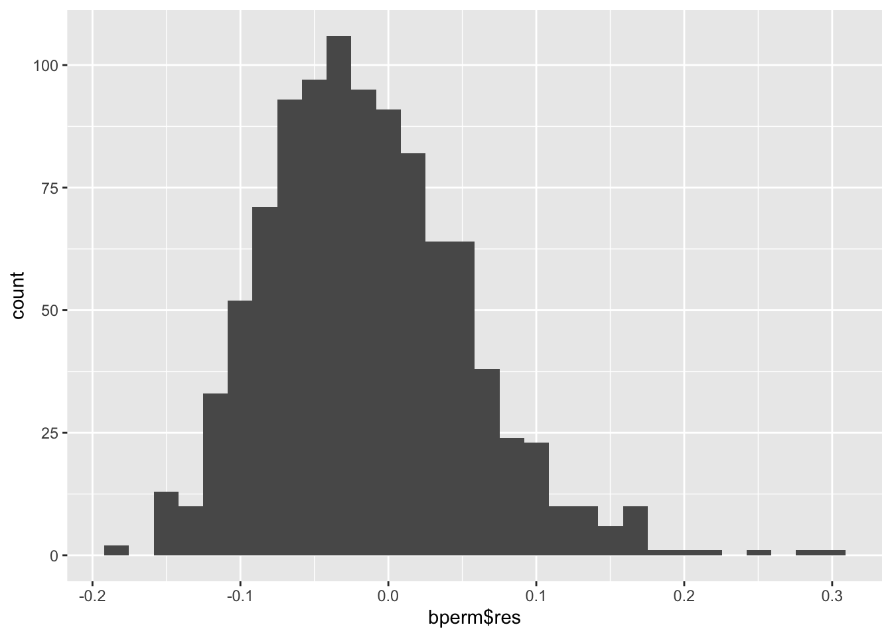
# Change the width of bins
#ggplot(df, aes(x=bperm$res)) +
# geom_histogram(binwidth=0.5)
# Change colors
p<-ggplot(df, aes(x=bperm$res)) +
geom_histogram(color="black", fill="white")
# Add mean line
p+ geom_vline(aes(xintercept=mean(bperm$res)),
color="blue", linetype="dashed", size=1)Warning: Using `size` aesthetic for lines was deprecated in ggplot2 3.4.0.
ℹ Please use `linewidth` instead.`stat_bin()` using `bins = 30`. Pick better value with `binwidth`.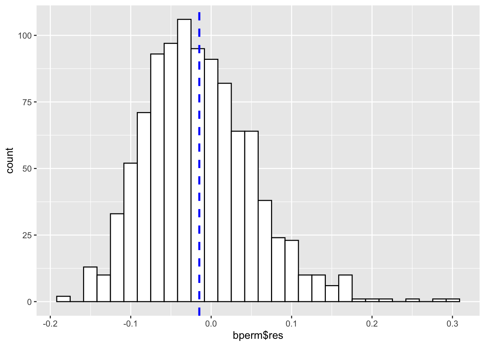
# Histogram with density plot
ggplot(df, aes(x=bperm$res)) +
geom_histogram(aes(y=..density..), colour="black", fill="white")+
geom_density(alpha=.2, fill="#FF6666") Warning: The dot-dot notation (`..density..`) was deprecated in ggplot2 3.4.0.
ℹ Please use `after_stat(density)` instead.`stat_bin()` using `bins = 30`. Pick better value with `binwidth`.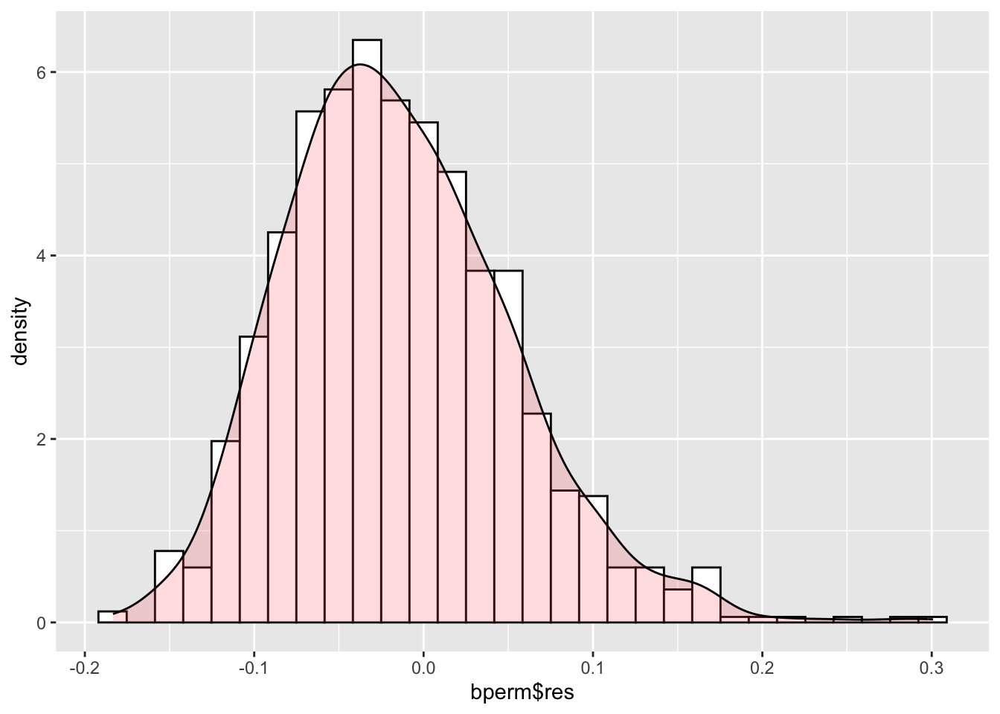
p`stat_bin()` using `bins = 30`. Pick better value with `binwidth`.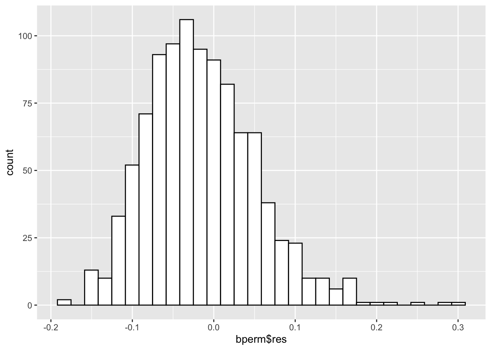
11.2 Global Spatial Autocorrelation: Geary’s
In this section, we will learn how to perform Geary’s c statistical testing by using appropriate functions from spdep package.
11.2.1 Geary’s C test
The code chunk below performs Geary’s C test for spatial autocorrelation by using geary.test() from spdep package.
geary.test(hunan$GDPPC, listw=rswm_q)
Geary C test under randomisation
data: hunan$GDPPC
weights: rswm_q
Geary C statistic standard deviate = 3.6108, p-value = 0.0001526
alternative hypothesis: Expectation greater than statistic
sample estimates:
Geary C statistic Expectation Variance
0.6907223 1.0000000 0.0073364 The p-value from Geary’s C is less than 0.05, we will reject the null hypothesis.
Geary C (Z value):
Large c value i.e., >1: Dispersed, observations tend to be dissimilar.
small c value i.e., <1: Clustered, observations tend to be similar.
c = 1: observations are arranged randomly over space.
11.2.1 Computing Monte Carlo Geary’s C
The code chunk below performs permutation test by Geary’s C statistic by using geary.mc() from spdep package.
set.seed(1234)
bperm=geary.mc(hunan$GDPPC,
listw=rswm_q,
nsim=999)
bperm
Monte-Carlo simulation of Geary C
data: hunan$GDPPC
weights: rswm_q
number of simulations + 1: 1000
statistic = 0.69072, observed rank = 1, p-value = 0.001
alternative hypothesis: greaterThe p-value from Monte-Carlo stimulation of Geary’s C is less than 0.05, we will reject the null hypothesis.
11.2.3 Visualizing the Monte Carlo Geary’s C
The code chunks below are used to visualize the distribution of the stimulated values.
mean(bperm$res[1:999])[1] 1.004402var(bperm$res[1:999])[1] 0.007436493summary(bperm$res[1:999]) Min. 1st Qu. Median Mean 3rd Qu. Max.
0.7142 0.9502 1.0052 1.0044 1.0595 1.2722 hist(bperm$res, freq=TRUE, breaks=20, xlab="Simulated Geary c")
abline(v=1, col="red") 
The histogram is symmetrical with mean = 1.0.
12. Spatial Correlogram
Spatial correlograms are great to examine patterns of spatial autocorrelation in your data or model residuals. They show how correlated are pairs of spatial observations when you increase the distance (lag) between them - they are plots of some index of autocorrelation (Moran’s I or Geary’s c) against distance.Although correlograms are not as fundamental as variograms (a keystone concept of geostatistics), they are very useful as an exploratory and descriptive tool. For this purpose they actually provide richer information than variograms.
12.1 Compute Moran’s I correlogram
The code chunk below uses sp.correlogram() from the spdep package to compute a 6-lag spatial correlogram of GDPPC. The global spatial autocorrelation used in Moran’s I. The plot() of base Graph is then used to plot the output.
MI_corr <- sp.correlogram(wm_q,
hunan$GDPPC,
order=6,
method="I",
style="W")
plot(MI_corr)
By plotting the output might not allow us to provide complete interpretation. This is because not all autocorrelation values are statistically significant. Hence, it is important for us to examine the full analysis report by printing out the analysis results as in the code chunk below.
print(MI_corr)Spatial correlogram for hunan$GDPPC
method: Moran's I
estimate expectation variance standard deviate Pr(I) two sided
1 (88) 0.3007500 -0.0114943 0.0043484 4.7351 2.189e-06 ***
2 (88) 0.2060084 -0.0114943 0.0020962 4.7505 2.029e-06 ***
3 (88) 0.0668273 -0.0114943 0.0014602 2.0496 0.040400 *
4 (88) 0.0299470 -0.0114943 0.0011717 1.2107 0.226015
5 (88) -0.1530471 -0.0114943 0.0012440 -4.0134 5.984e-05 ***
6 (88) -0.1187070 -0.0114943 0.0016791 -2.6164 0.008886 **
---
Signif. codes: 0 '***' 0.001 '**' 0.01 '*' 0.05 '.' 0.1 ' ' 1??
12.2 Compute Geary’s C correlogram and plot
The code chunk below uses sp.correlogram() from the spdep package to compute a 6-lag spatial correlogram of GDPPC. The global spatial autocorrelation used in Geary’s C. The plot() of base Graph is then used to plot the output.
GC_corr <- sp.correlogram(wm_q,
hunan$GDPPC,
order=6,
method="C",
style="W")
plot(GC_corr)
print(GC_corr)Spatial correlogram for hunan$GDPPC
method: Geary's C
estimate expectation variance standard deviate Pr(I) two sided
1 (88) 0.6907223 1.0000000 0.0073364 -3.6108 0.0003052 ***
2 (88) 0.7630197 1.0000000 0.0049126 -3.3811 0.0007220 ***
3 (88) 0.9397299 1.0000000 0.0049005 -0.8610 0.3892612
4 (88) 1.0098462 1.0000000 0.0039631 0.1564 0.8757128
5 (88) 1.2008204 1.0000000 0.0035568 3.3673 0.0007592 ***
6 (88) 1.0773386 1.0000000 0.0058042 1.0151 0.3100407
---
Signif. codes: 0 '***' 0.001 '**' 0.01 '*' 0.05 '.' 0.1 ' ' 113. Cluster and Outlier Analysis
Local Indicators of Spatial Association or LISA are statistics that evaluate the existence of clusters in the spatial arrangement of a given variable. For instance if we are studying cancer rates among census tracts in a given city local clusters in the rates mean that there are areas that have higher or lower rates than is to be expected by chance alone; that is, the values occurring are above or below those of a random distribution in space.
In this section, we will learn how to apply appropriate Local Indicators for Spatial Association (LISA), especially local Moran’I to detect cluster and/or outlier from GDP per capita 2012 of Hunan Province, PRC.
13.1 Computing local Moran’s I
we will use localmoran() function from spdep to compute the local Moran’s I of GDPPC2012. It computes Ii values, given a set of zi values and a listw object providing neighbour weighting information for the polygon associated with the zi values.
fips <- order(hunan$County)
localMI <- localmoran(hunan$GDPPC, rswm_q)
head(localMI) Ii E.Ii Var.Ii Z.Ii Pr(z != E(Ii))
1 -0.001468468 -2.815006e-05 4.723841e-04 -0.06626904 0.9471636
2 0.025878173 -6.061953e-04 1.016664e-02 0.26266425 0.7928094
3 -0.011987646 -5.366648e-03 1.133362e-01 -0.01966705 0.9843090
4 0.001022468 -2.404783e-07 5.105969e-06 0.45259801 0.6508382
5 0.014814881 -6.829362e-05 1.449949e-03 0.39085814 0.6959021
6 -0.038793829 -3.860263e-04 6.475559e-03 -0.47728835 0.6331568localmoran() function returns a matrix of values whose columns are:
Ii: the local Moran’s I statistics
E.Ii: the expectation of local moran statistic under the randomisation hypothesis
Var.Ii: the variance of local moran statistic under the randomisation hypothesis
Z.Ii:the standard deviate of local moran statistic
Pr(): the p-value of local moran statistic
The code chunk below is used to list the content of the local Moran’s matrix. This is derived by using printCoefmat().
printCoefmat(data.frame(
localMI[fips,],
row.names=hunan$County[fips]),
check.names=FALSE) Ii E.Ii Var.Ii Z.Ii Pr.z....E.Ii..
Anhua -2.2493e-02 -5.0048e-03 5.8235e-02 -7.2467e-02 0.9422
Anren -3.9932e-01 -7.0111e-03 7.0348e-02 -1.4791e+00 0.1391
Anxiang -1.4685e-03 -2.8150e-05 4.7238e-04 -6.6269e-02 0.9472
Baojing 3.4737e-01 -5.0089e-03 8.3636e-02 1.2185e+00 0.2230
Chaling 2.0559e-02 -9.6812e-04 2.7711e-02 1.2932e-01 0.8971
Changning -2.9868e-05 -9.0010e-09 1.5105e-07 -7.6828e-02 0.9388
Changsha 4.9022e+00 -2.1348e-01 2.3194e+00 3.3590e+00 0.0008
Chengbu 7.3725e-01 -1.0534e-02 2.2132e-01 1.5895e+00 0.1119
Chenxi 1.4544e-01 -2.8156e-03 4.7116e-02 6.8299e-01 0.4946
Cili 7.3176e-02 -1.6747e-03 4.7902e-02 3.4200e-01 0.7324
Dao 2.1420e-01 -2.0824e-03 4.4123e-02 1.0297e+00 0.3032
Dongan 1.5210e-01 -6.3485e-04 1.3471e-02 1.3159e+00 0.1882
Dongkou 5.2918e-01 -6.4461e-03 1.0748e-01 1.6338e+00 0.1023
Fenghuang 1.8013e-01 -6.2832e-03 1.3257e-01 5.1198e-01 0.6087
Guidong -5.9160e-01 -1.3086e-02 3.7003e-01 -9.5104e-01 0.3416
Guiyang 1.8240e-01 -3.6908e-03 3.2610e-02 1.0305e+00 0.3028
Guzhang 2.8466e-01 -8.5054e-03 1.4152e-01 7.7931e-01 0.4358
Hanshou 2.5878e-02 -6.0620e-04 1.0167e-02 2.6266e-01 0.7928
Hengdong 9.9964e-03 -4.9063e-04 6.7742e-03 1.2742e-01 0.8986
Hengnan 2.8064e-02 -3.2160e-04 3.7597e-03 4.6294e-01 0.6434
Hengshan -5.8201e-03 -3.0437e-05 5.1076e-04 -2.5618e-01 0.7978
Hengyang 6.2997e-02 -1.3046e-03 2.1865e-02 4.3486e-01 0.6637
Hongjiang 1.8790e-01 -2.3019e-03 3.1725e-02 1.0678e+00 0.2856
Huarong -1.5389e-02 -1.8667e-03 8.1030e-02 -4.7503e-02 0.9621
Huayuan 8.3772e-02 -8.5569e-04 2.4495e-02 5.4072e-01 0.5887
Huitong 2.5997e-01 -5.2447e-03 1.1077e-01 7.9685e-01 0.4255
Jiahe -1.2431e-01 -3.0550e-03 5.1111e-02 -5.3633e-01 0.5917
Jianghua 2.8651e-01 -3.8280e-03 8.0968e-02 1.0204e+00 0.3076
Jiangyong 2.4337e-01 -2.7082e-03 1.1746e-01 7.1800e-01 0.4728
Jingzhou 1.8270e-01 -8.5106e-04 2.4363e-02 1.1759e+00 0.2396
Jinshi -1.1988e-02 -5.3666e-03 1.1334e-01 -1.9667e-02 0.9843
Jishou -2.8680e-01 -2.6305e-03 4.4028e-02 -1.3543e+00 0.1756
Lanshan 6.3334e-02 -9.6365e-04 2.0441e-02 4.4972e-01 0.6529
Leiyang 1.1581e-02 -1.4948e-04 2.5082e-03 2.3422e-01 0.8148
Lengshuijiang -1.7903e+00 -8.2129e-02 2.1598e+00 -1.1623e+00 0.2451
Li 1.0225e-03 -2.4048e-07 5.1060e-06 4.5260e-01 0.6508
Lianyuan -1.4672e-01 -1.8983e-03 1.9145e-02 -1.0467e+00 0.2952
Liling 1.3774e+00 -1.5097e-02 4.2601e-01 2.1335e+00 0.0329
Linli 1.4815e-02 -6.8294e-05 1.4499e-03 3.9086e-01 0.6959
Linwu -2.4621e-03 -9.0703e-06 1.9258e-04 -1.7676e-01 0.8597
Linxiang 6.5904e-02 -2.9028e-03 2.5470e-01 1.3634e-01 0.8916
Liuyang 3.3688e+00 -7.7502e-02 1.5180e+00 2.7972e+00 0.0052
Longhui 8.0801e-01 -1.1377e-02 1.5538e-01 2.0787e+00 0.0376
Longshan 7.5663e-01 -1.1100e-02 3.1449e-01 1.3690e+00 0.1710
Luxi 1.8177e-01 -2.4855e-03 3.4249e-02 9.9561e-01 0.3194
Mayang 2.1852e-01 -5.8773e-03 9.8049e-02 7.1663e-01 0.4736
Miluo 1.8704e+00 -1.6927e-02 2.7925e-01 3.5715e+00 0.0004
Nan -9.5789e-03 -4.9497e-04 6.8341e-03 -1.0988e-01 0.9125
Ningxiang 1.5607e+00 -7.3878e-02 8.0012e-01 1.8274e+00 0.0676
Ningyuan 2.0910e-01 -7.0884e-03 8.2306e-02 7.5356e-01 0.4511
Pingjiang -9.8964e-01 -2.6457e-03 5.6027e-02 -4.1698e+00 0.0000
Qidong 1.1806e-01 -2.1207e-03 2.4747e-02 7.6396e-01 0.4449
Qiyang 6.1966e-02 -7.3374e-04 8.5743e-03 6.7712e-01 0.4983
Rucheng -3.6992e-01 -8.8999e-03 2.5272e-01 -7.1814e-01 0.4727
Sangzhi 2.5053e-01 -4.9470e-03 6.8000e-02 9.7972e-01 0.3272
Shaodong -3.2659e-02 -3.6592e-05 5.0546e-04 -1.4510e+00 0.1468
Shaoshan 2.1223e+00 -5.0227e-02 1.3668e+00 1.8583e+00 0.0631
Shaoyang 5.9499e-01 -1.1253e-02 1.3012e-01 1.6807e+00 0.0928
Shimen -3.8794e-02 -3.8603e-04 6.4756e-03 -4.7729e-01 0.6332
Shuangfeng 9.2835e-03 -2.2867e-03 3.1516e-02 6.5174e-02 0.9480
Shuangpai 8.0591e-02 -3.1366e-04 8.9838e-03 8.5358e-01 0.3933
Suining 3.7585e-01 -3.5933e-03 4.1870e-02 1.8544e+00 0.0637
Taojiang -2.5394e-01 -1.2395e-03 1.4477e-02 -2.1002e+00 0.0357
Taoyuan 1.4729e-02 -1.2039e-04 8.5103e-04 5.0903e-01 0.6107
Tongdao 4.6482e-01 -6.9870e-03 1.9879e-01 1.0582e+00 0.2900
Wangcheng 4.4220e+00 -1.1067e-01 1.3596e+00 3.8873e+00 0.0001
Wugang 7.1003e-01 -7.8144e-03 1.0710e-01 2.1935e+00 0.0283
Xiangtan 2.4530e-01 -3.6457e-04 3.2319e-03 4.3213e+00 0.0000
Xiangxiang 2.6271e-01 -1.2703e-03 2.1290e-02 1.8092e+00 0.0704
Xiangyin 5.4525e-01 -4.7442e-03 7.9236e-02 1.9539e+00 0.0507
Xinhua 1.1810e-01 -6.2649e-03 8.6001e-02 4.2409e-01 0.6715
Xinhuang 1.5725e-01 -4.1820e-03 3.6648e-01 2.6667e-01 0.7897
Xinning 6.8928e-01 -9.6674e-03 2.0328e-01 1.5502e+00 0.1211
Xinshao 5.7578e-02 -8.5932e-03 1.1769e-01 1.9289e-01 0.8470
Xintian -7.4050e-03 -5.1493e-03 1.0877e-01 -6.8395e-03 0.9945
Xupu 3.2406e-01 -5.7468e-03 5.7735e-02 1.3726e+00 0.1699
Yanling -6.9021e-02 -5.9211e-04 9.9306e-03 -6.8667e-01 0.4923
Yizhang -2.6844e-01 -2.2463e-03 4.7588e-02 -1.2202e+00 0.2224
Yongshun 6.3064e-01 -1.1350e-02 1.8830e-01 1.4795e+00 0.1390
Yongxing 4.3411e-01 -9.0735e-03 1.5088e-01 1.1409e+00 0.2539
You 7.8750e-02 -7.2728e-03 1.2116e-01 2.4714e-01 0.8048
Yuanjiang 2.0004e-04 -1.7760e-04 2.9798e-03 6.9181e-03 0.9945
Yuanling 8.7298e-03 -2.2981e-06 2.3221e-05 1.8121e+00 0.0700
Yueyang 4.1189e-02 -1.9768e-04 2.3113e-03 8.6085e-01 0.3893
Zhijiang 1.0476e-01 -7.8123e-04 1.3100e-02 9.2214e-01 0.3565
Zhongfang -2.2685e-01 -2.1455e-03 3.5927e-02 -1.1855e+00 0.2358
Zhuzhou 3.2864e-01 -5.2432e-04 7.2391e-03 3.8688e+00 0.0001
Zixing -7.6849e-01 -8.8210e-02 9.4057e-01 -7.0144e-01 0.483013.1.1 Mapping the local Moran’s I
Before mapping the local Moran’s I map, it is wise to append the local Moran’s I dataframe (i.e. localMI) onto hunan SpatialPolygonDataFrame. The code chunks below can be used to perform the task. The out SpatialPolygonDataFrame is called hunan.localMI.
hunan.localMI <- cbind(hunan,localMI) %>%
rename(Pr.Ii = Pr.z....E.Ii..)13.1.2 Mapping the local Moran’s I values
The code chunk below uses choloropeth mapping functions tmap pacakge to plot the local Moran’s I value.
tm_shape(hunan.localMI) +
tm_fill(col = "Ii",
style = "pretty",
palette = "RdBu",
title = "local moran statistics") +
tm_borders(alpha = 0.5)Variable(s) "Ii" contains positive and negative values, so midpoint is set to 0. Set midpoint = NA to show the full spectrum of the color palette.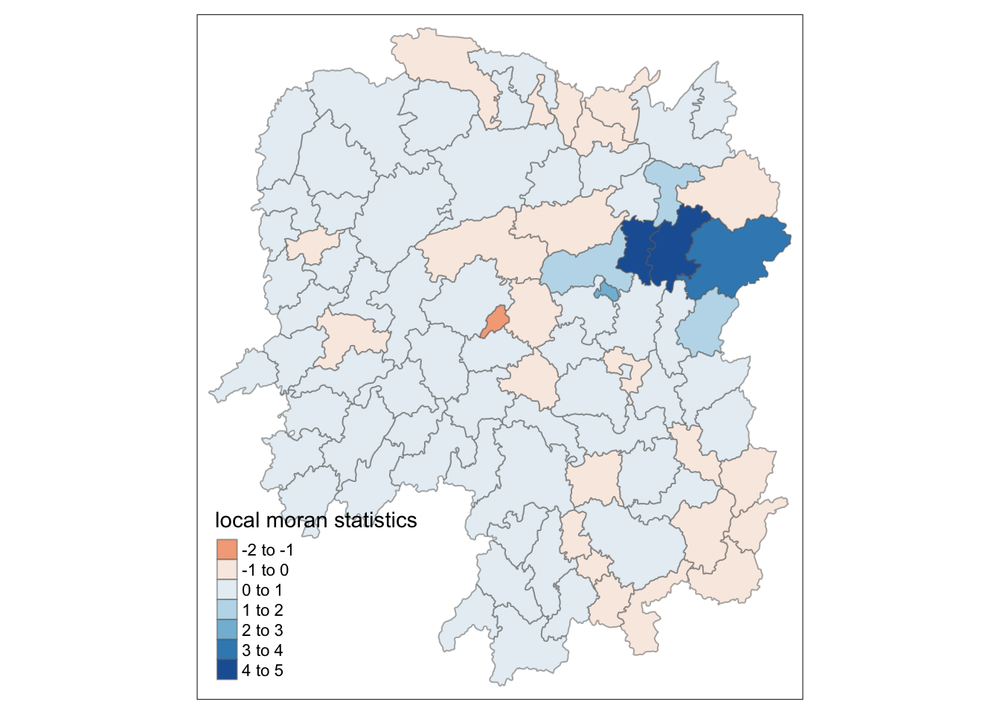
13.1.3 Mapping local Moran’s p values
The choropleth shows there is evidence for both positive and negative Ii values. However, it is useful to consider the p-values for each of these values, as consider above.
The code chunks below produce a choropleth map of Moran’s I p-values by using functions of tmap package.
tm_shape(hunan.localMI) +
tm_fill(col = "Pr.Ii",
breaks=c(-Inf, 0.001, 0.01, 0.05, 0.1, Inf),
palette="-Blues",
title = "local Moran's I p-values") +
tm_borders(alpha = 0.5)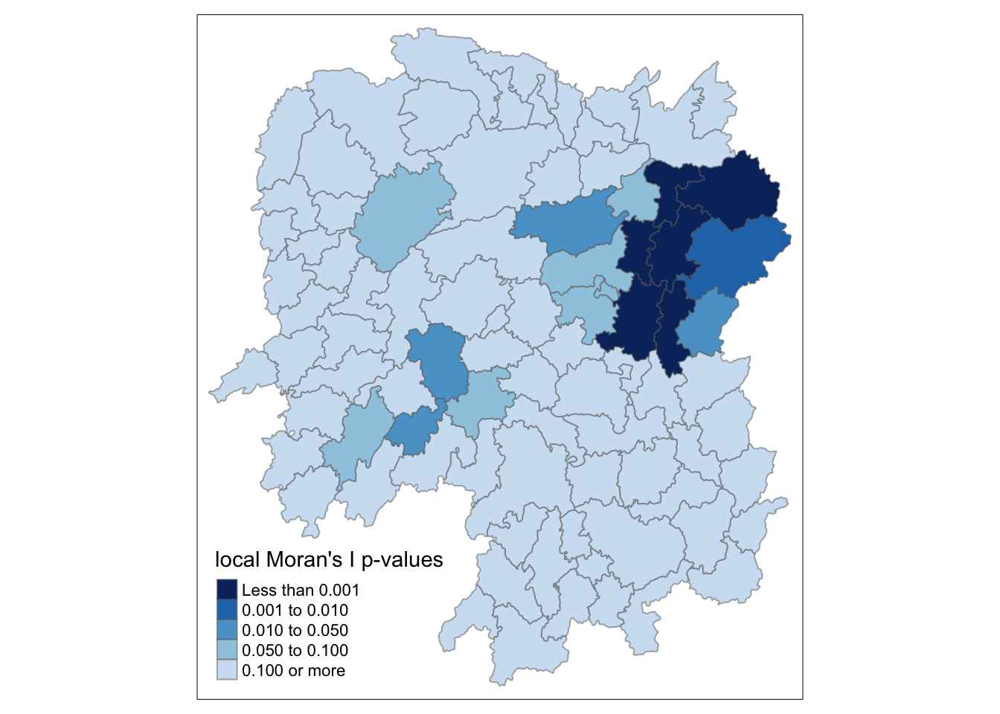
13.1.4 Mapping both local Moran’s I values and p-values
For effective interpretation, it is better to plot both the local Moran’s I values map and its corresponding p-values map next to each other.
The code chunk below will be used to create such visualisation.
localMI.map <- tm_shape(hunan.localMI) +
tm_fill(col = "Ii",
style = "pretty",
title = "local moran statistics") +
tm_borders(alpha = 0.5)
pvalue.map <- tm_shape(hunan.localMI) +
tm_fill(col = "Pr.Ii",
breaks=c(-Inf, 0.001, 0.01, 0.05, 0.1, Inf),
palette="-Blues",
title = "local Moran's I p-values") +
tm_borders(alpha = 0.5)
tmap_arrange(localMI.map, pvalue.map, asp=1, ncol=2)Variable(s) "Ii" contains positive and negative values, so midpoint is set to 0. Set midpoint = NA to show the full spectrum of the color palette.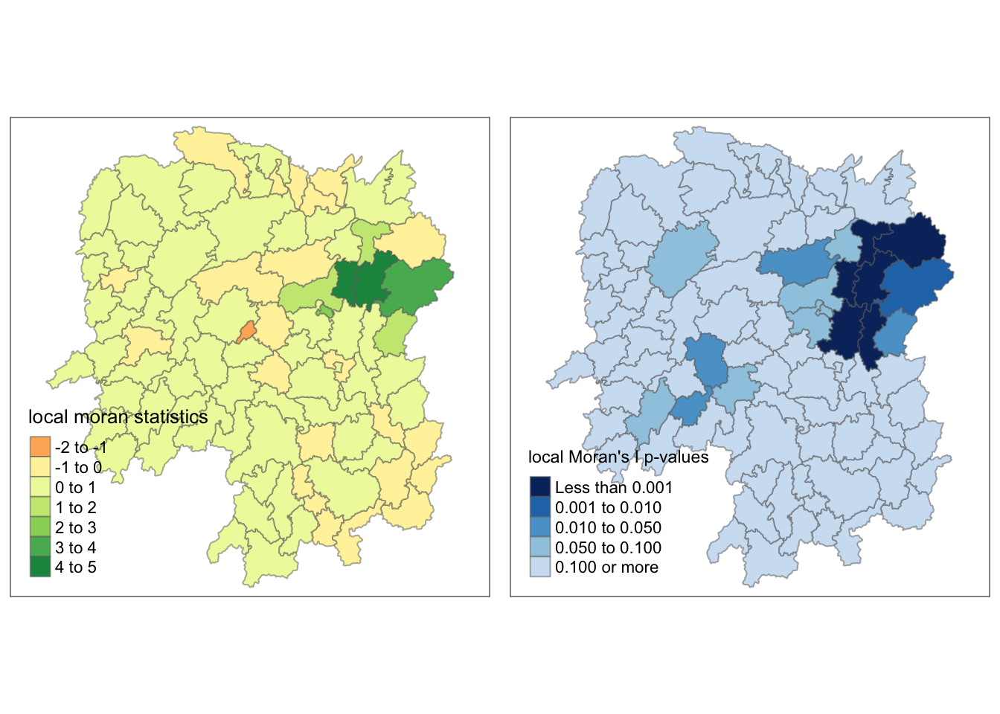
14. Creating a LISA Cluster Map
The LISA Cluster Map shows the significant locations color coded by type of spatial autocorrelation. The first step before we can generate the LISA cluster map is to plot the Moran scatterplot.
14.1 Plotting Moran scatterplot
The Moran scatterplot is an illustration of the relationship between the values of the chosen attribute at each location and the average value of the same attribute at neighboring locations.
The code chunk below plots the Moran scatterplot of GDPPC 2012 by using moran.plot() of spdep.
nci <- moran.plot(hunan$GDPPC, rswm_q,
labels=as.character(hunan$County),
xlab="GDPPC 2012",
ylab="Spatially Lag GDPPC 2012")
Notice that the plot is split in 4 quadrants. The top right corner belongs to areas that have high GDPPC and are surrounded by other areas that have the average level of GDPPC. This are the high-high locations in the lesson slide.
14.2 Plotting Moran scatterplot with standardized variable
First we will use scale() to centers and scales the variable. Here centering is done by subtracting the mean (omitting NAs) the corresponding columns, and scaling is done by dividing the (centered) variable by their standard deviations.
hunan$Z.GDPPC <- scale(hunan$GDPPC) %>% as.vector The as.vector() added to the end is to make sure that the data type we get out of this is a vector, that map neatly into out dataframe.
Now, we are ready to plot the Moran scatterplot again by using the code chunk below.
nci2 <- moran.plot(hunan$Z.GDPPC, rswm_q,
labels=as.character(hunan$County),
xlab="z-GDPPC 2012",
ylab="Spatially Lag z-GDPPC 2012")
14.3 Preparing LISA map classes
The code chunks below follow the steps to prepare a LISA cluster map.
quadrant <- vector(mode="numeric",length=nrow(localMI))The code chunk below centers the variable of interest around its mean.
DV <- hunan$GDPPC - mean(hunan$GDPPC) The code chunk below centers the local Moran’s around the mean.
C_mI <- localMI[,1] - mean(localMI[,1]) The code chunk below sets the significance value/alpha to 0.05.
signif <- 0.05 These four command lines define the high-high, low-low, low-high and high-low categories.
quadrant[DV >0 & C_mI>0] <- 4
quadrant[DV <0 & C_mI<0] <- 2
quadrant[DV <0 & C_mI>0] <- 1
quadrant[DV >0 & C_mI<0] <- 3The code chunk below places non-significant Moran in the category 0.
quadrant[localMI[,5]>signif] <- 0Alternatively, we can combine all steps into one code chunk, as shown below:
quadrant <- vector(mode="numeric",length=nrow(localMI))
DV <- hunan$GDPPC - mean(hunan$GDPPC)
C_mI <- localMI[,1] - mean(localMI[,1])
signif <- 0.05
quadrant[DV >0 & C_mI>0] <- 4
quadrant[DV <0 & C_mI<0] <- 2
quadrant[DV <0 & C_mI>0] <- 1
quadrant[DV >0 & C_mI<0] <- 3
quadrant[localMI[,5]>signif] <- 014.4 Plotting LISA map
The code chunk below plots the LISA map.
hunan.localMI$quadrant <- quadrant
colors <- c("#ffffff", "#2c7bb6", "#abd9e9", "#fdae61", "#d7191c")
clusters <- c("insignificant", "low-low", "low-high", "high-low", "high-high")
tm_shape(hunan.localMI) +
tm_fill(col = "quadrant",
style = "cat",
palette = colors[c(sort(unique(quadrant)))+1],
labels = clusters[c(sort(unique(quadrant)))+1],
popup.vars = c("")) +
tm_view(set.zoom.limits = c(11,17)) +
tm_borders(alpha=0.5)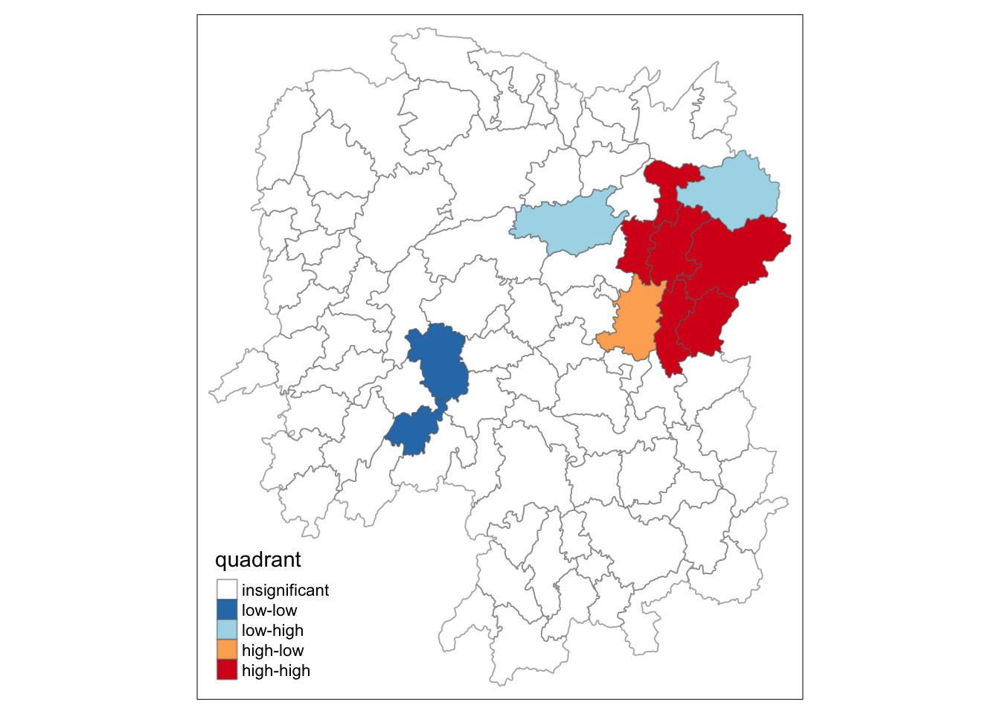
For effective interpretation, it is better to plot both the local Moran’s I values map and its corresponding p-values map next to each other.
The code chunk below will be used to create such visualization.
gdppc <- qtm(hunan, "GDPPC")
hunan.localMI$quadrant <- quadrant
colors <- c("#ffffff", "#2c7bb6", "#abd9e9", "#fdae61", "#d7191c")
clusters <- c("insignificant", "low-low", "low-high", "high-low", "high-high")
LISAmap <- tm_shape(hunan.localMI) +
tm_fill(col = "quadrant",
style = "cat",
palette = colors[c(sort(unique(quadrant)))+1],
labels = clusters[c(sort(unique(quadrant)))+1],
popup.vars = c("")) +
tm_view(set.zoom.limits = c(11,17)) +
tm_borders(alpha=0.5)
tmap_arrange(gdppc, LISAmap, asp=1, ncol=2)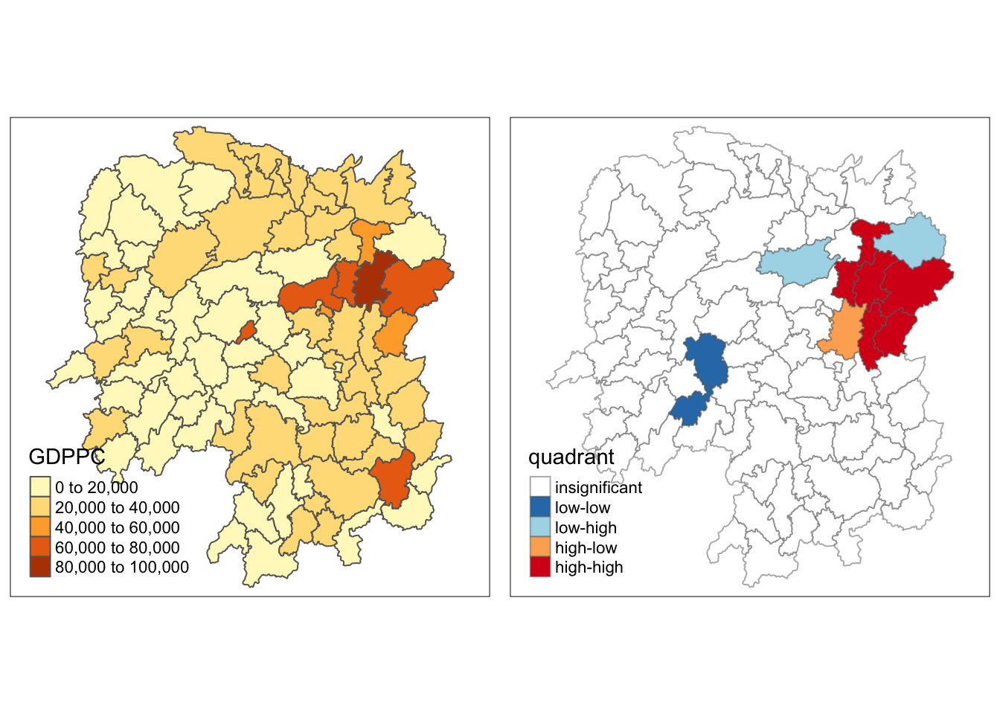
??
15. Hot Spot and Cold Spot Area Analysis
Beside detecting cluster and outliers, localised spatial statistics can be also used to detect hot spot and/or cold spot areas.
The term ‘hot spot’ has been used generically across disciplines to describe a region or value that is higher relative to its surroundings (Lepers et al 2005, Aben et al 2012, Isobe et al 2015).
15.1 Getis and Ord’s G-Statistics
An alternative spatial statistics to detect spatial anomalies is the Getis and Ord’s G-statistics (Getis and Ord, 1972; Ord and Getis, 1995). It looks at neighbours within a defined proximity to identify where either high or low values clutser spatially. Here, statistically significant hot-spots are recognised as areas of high values where other areas within a neighbourhood range also share high values too.
The analysis consists of three steps:
Deriving spatial weight matrix
Computing Gi statistics
Mapping Gi statistics
15.2 Deriving distance-based weight matrix
First, we need to define a new set of neighbours. Whist the spatial autocorrelation considered units which shared borders, for Getis-Ord we are defining neighbours based on distance.
There are two type of distance-based proximity matrix, they are:
fixed distance weight matrix; and
adaptive distance weight matrix.
15.3 Deriving the centroid
We will need points to associate with each polygon before we can make our connectivity graph. It will be a little more complicated than just running st_centroid() on the sf object: us.bound. We need the coordinates in a separate data frame for this to work. To do this we will use a mapping function. The mapping function applies a given function to each element of a vector and returns a vector of the same length. Our input vector will be the geometry column of us.bound. Our function will be st_centroid(). We will be using map_dbl variation of map from the purrr package. For more documentation, check out map documentation
To get our longitude values we map the st_centroid() function over the geometry column of us.bound and access the longitude value through double bracket notation [[]] and 1. This allows us to get only the longitude, which is the first value in each centroid.
longitude <- map_dbl(hunan$geometry, ~st_centroid(.x)[[1]])We do the same for latitude with one key difference. We access the second value per each centroid with [[2]].
latitude <- map_dbl(hunan$geometry, ~st_centroid(.x)[[2]])Now that we have latitude and longitude, we use cbind to put longitude and latitude into the same object.
coords <- cbind(longitude, latitude)15.4 Determine the cut-off distance
Firstly, we need to determine the upper limit for distance band by using the steps below:
Return a matrix with the indices of points belonging to the set of the k nearest neighbours of each other by using knearneigh() of spdep.
Convert the knn object returned by knearneigh() into a neighbours list of class nb with a list of integer vectors containing neighbour region number ids by using knn2nb().
Return the length of neighbour relationship edges by using nbdists() of spdep. The function returns in the units of the coordinates if the coordinates are projected, in km otherwise.
Remove the list structure of the returned object by using unlist().
#coords <- coordinates(hunan)
k1 <- knn2nb(knearneigh(coords))
k1dists <- unlist(nbdists(k1, coords, longlat = TRUE))
summary(k1dists) Min. 1st Qu. Median Mean 3rd Qu. Max.
24.79 32.57 38.01 39.07 44.52 61.79 The summary report shows that the largest first nearest neighbour distance is 61.79 km, so using this as the upper threshold gives certainty that all units will have at least one neighbour.
15.5 Computing fixed distance weight matrix
Now, we will compute the distance weight matrix by using dnearneigh() as shown in the code chunk below.
wm_d62 <- dnearneigh(coords, 0, 62, longlat = TRUE)
wm_d62Neighbour list object:
Number of regions: 88
Number of nonzero links: 324
Percentage nonzero weights: 4.183884
Average number of links: 3.681818 Next, nb2listw() is used to convert the nb object into spatial weights object.
wm62_lw <- nb2listw(wm_d62, style = 'B')
summary(wm62_lw)Characteristics of weights list object:
Neighbour list object:
Number of regions: 88
Number of nonzero links: 324
Percentage nonzero weights: 4.183884
Average number of links: 3.681818
Link number distribution:
1 2 3 4 5 6
6 15 14 26 20 7
6 least connected regions:
6 15 30 32 56 65 with 1 link
7 most connected regions:
21 28 35 45 50 52 82 with 6 links
Weights style: B
Weights constants summary:
n nn S0 S1 S2
B 88 7744 324 648 5440The output spatial weights object is called wm62_lw.
15.6 Computing adaptive distance weight matrix
One of the characteristics of fixed distance weight matrix is that more densely settled areas (usually the urban areas) tend to have more neighbours and the less densely settled areas (usually the rural counties) tend to have lesser neighbours. Having many neighbours smoothes the neighbour relationship across more neighbours.
It is possible to control the numbers of neighbours directly using k-nearest neighbours, either accepting asymmetric neighbours or imposing symmetry as shown in the code chunk below.
knn <- knn2nb(knearneigh(coords, k=8))
knnNeighbour list object:
Number of regions: 88
Number of nonzero links: 704
Percentage nonzero weights: 9.090909
Average number of links: 8
Non-symmetric neighbours listNext, nb2listw() is used to convert the nb object into spatial weights object.
knn_lw <- nb2listw(knn, style = 'B')
summary(knn_lw)Characteristics of weights list object:
Neighbour list object:
Number of regions: 88
Number of nonzero links: 704
Percentage nonzero weights: 9.090909
Average number of links: 8
Non-symmetric neighbours list
Link number distribution:
8
88
88 least connected regions:
1 2 3 4 5 6 7 8 9 10 11 12 13 14 15 16 17 18 19 20 21 22 23 24 25 26 27 28 29 30 31 32 33 34 35 36 37 38 39 40 41 42 43 44 45 46 47 48 49 50 51 52 53 54 55 56 57 58 59 60 61 62 63 64 65 66 67 68 69 70 71 72 73 74 75 76 77 78 79 80 81 82 83 84 85 86 87 88 with 8 links
88 most connected regions:
1 2 3 4 5 6 7 8 9 10 11 12 13 14 15 16 17 18 19 20 21 22 23 24 25 26 27 28 29 30 31 32 33 34 35 36 37 38 39 40 41 42 43 44 45 46 47 48 49 50 51 52 53 54 55 56 57 58 59 60 61 62 63 64 65 66 67 68 69 70 71 72 73 74 75 76 77 78 79 80 81 82 83 84 85 86 87 88 with 8 links
Weights style: B
Weights constants summary:
n nn S0 S1 S2
B 88 7744 704 1300 2301417. Computing GI Statistics
17.1 Gi Statistics usingn fixed distance
fips <- order(hunan$County)
gi.fixed <- localG(hunan$GDPPC, wm62_lw)
gi.fixed [1] 0.436075843 -0.265505650 -0.073033665 0.413017033 0.273070579
[6] -0.377510776 2.863898821 2.794350420 5.216125401 0.228236603
[11] 0.951035346 -0.536334231 0.176761556 1.195564020 -0.033020610
[16] 1.378081093 -0.585756761 -0.419680565 0.258805141 0.012056111
[21] -0.145716531 -0.027158687 -0.318615290 -0.748946051 -0.961700582
[26] -0.796851342 -1.033949773 -0.460979158 -0.885240161 -0.266671512
[31] -0.886168613 -0.855476971 -0.922143185 -1.162328599 0.735582222
[36] -0.003358489 -0.967459309 -1.259299080 -1.452256513 -1.540671121
[41] -1.395011407 -1.681505286 -1.314110709 -0.767944457 -0.192889342
[46] 2.720804542 1.809191360 -1.218469473 -0.511984469 -0.834546363
[51] -0.908179070 -1.541081516 -1.192199867 -1.075080164 -1.631075961
[56] -0.743472246 0.418842387 0.832943753 -0.710289083 -0.449718820
[61] -0.493238743 -1.083386776 0.042979051 0.008596093 0.136337469
[66] 2.203411744 2.690329952 4.453703219 -0.340842743 -0.129318589
[71] 0.737806634 -1.246912658 0.666667559 1.088613505 -0.985792573
[76] 1.233609606 -0.487196415 1.626174042 -1.060416797 0.425361422
[81] -0.837897118 -0.314565243 0.371456331 4.424392623 -0.109566928
[86] 1.364597995 -1.029658605 -0.718000620
attr(,"cluster")
[1] Low Low High High High High High High High Low Low High Low Low Low
[16] High High High High Low High High Low Low High Low Low Low Low Low
[31] Low Low Low High Low Low Low Low Low Low High Low Low Low Low
[46] High High Low Low Low Low High Low Low Low Low Low High Low Low
[61] Low Low Low High High High Low High Low Low High Low High High Low
[76] High Low Low Low Low Low Low High High Low High Low Low
Levels: Low High
attr(,"gstari")
[1] FALSE
attr(,"call")
localG(x = hunan$GDPPC, listw = wm62_lw)
attr(,"class")
[1] "localG"The output of localG() is a vector of G or Gstar values, with attributes “gstari” set to TRUE or FALSE, “call” set to the function call, and class “localG”.
The Gi statistics is represented as a Z-score. Greater values represent a greater intensity of clustering and the direction (positive or negative) indicates high or low clusters.
Next, we will join the Gi values to their corresponding hunan sf data frame by using the code chunk below.
hunan.gi <- cbind(hunan, as.matrix(gi.fixed)) %>%
rename(gstat_fixed = as.matrix.gi.fixed.)In fact, the code chunk above performs three tasks. First, it convert the output vector (i.e. gi.fixed) into r matrix object by using as.matrix(). Next, cbind() is used to join hunan@data and gi.fixed matrix to produce a new SpatialPolygonDataFrame called hunan.gi. Lastly, the field name of the gi values is renamed to gstat_fixed by using rename().
17.2 Mapping GI values with fixed distance weights
The code chunk below shows the functions used to map the GI values derived using fixed distance weight matrix.
gdppc <- qtm(hunan, "GDPPC")
Gimap <-tm_shape(hunan.gi) +
tm_fill(col = "gstat_fixed",
style = "pretty",
palette="-RdBu",
title = "local Gi") +
tm_borders(alpha = 0.5)
tmap_arrange(gdppc, Gimap, asp=1, ncol=2)Variable(s) "gstat_fixed" contains positive and negative values, so midpoint is set to 0. Set midpoint = NA to show the full spectrum of the color palette.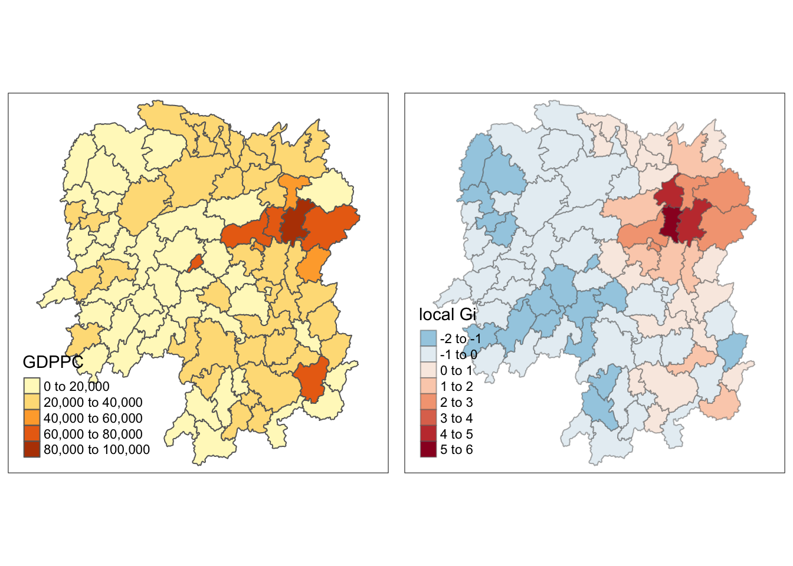
??
17.3 Gi Statistics using adaptive distance
The code chunk below are used to compute the Gi values for GDPPC2012 by using an adaptive distance weight matrix (i.e knb_lw).
fips <- order(hunan$County)
gi.adaptive <- localG(hunan$GDPPC, knn_lw)
hunan.gi <- cbind(hunan, as.matrix(gi.adaptive)) %>%
rename(gstat_adaptive = as.matrix.gi.adaptive.)17.4 Mapping Gi values with adaptive distance weights
It is time for us to visualise the locations of hot spot and cold spot areas. The choropleth mapping functions of tmap package will be used to map the Gi values.
The code chunk below shows the functions used to map the Gi values derived using fixed distance weight matrix.
gdppc<- qtm(hunan, "GDPPC")
Gimap <- tm_shape(hunan.gi) +
tm_fill(col = "gstat_adaptive",
style = "pretty",
palette="-RdBu",
title = "local Gi") +
tm_borders(alpha = 0.5)
tmap_arrange(gdppc,
Gimap,
asp=1,
ncol=2)Variable(s) "gstat_adaptive" contains positive and negative values, so midpoint is set to 0. Set midpoint = NA to show the full spectrum of the color palette.